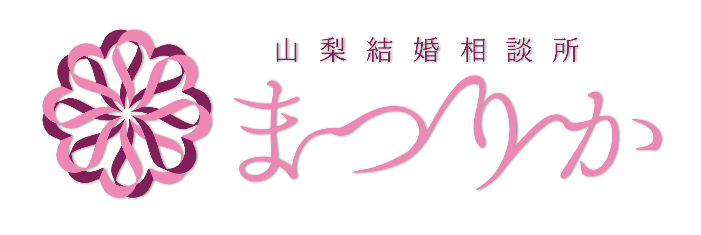
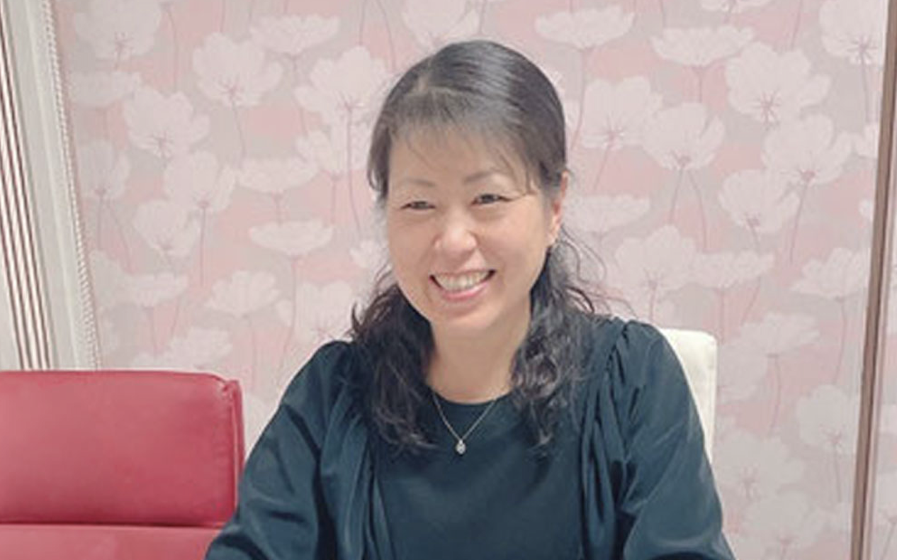
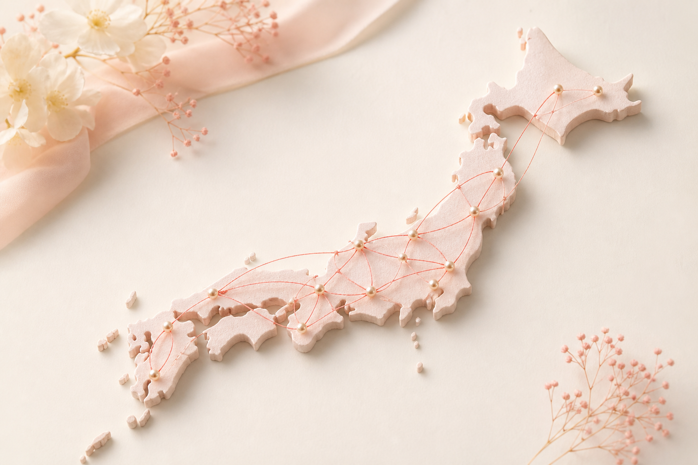
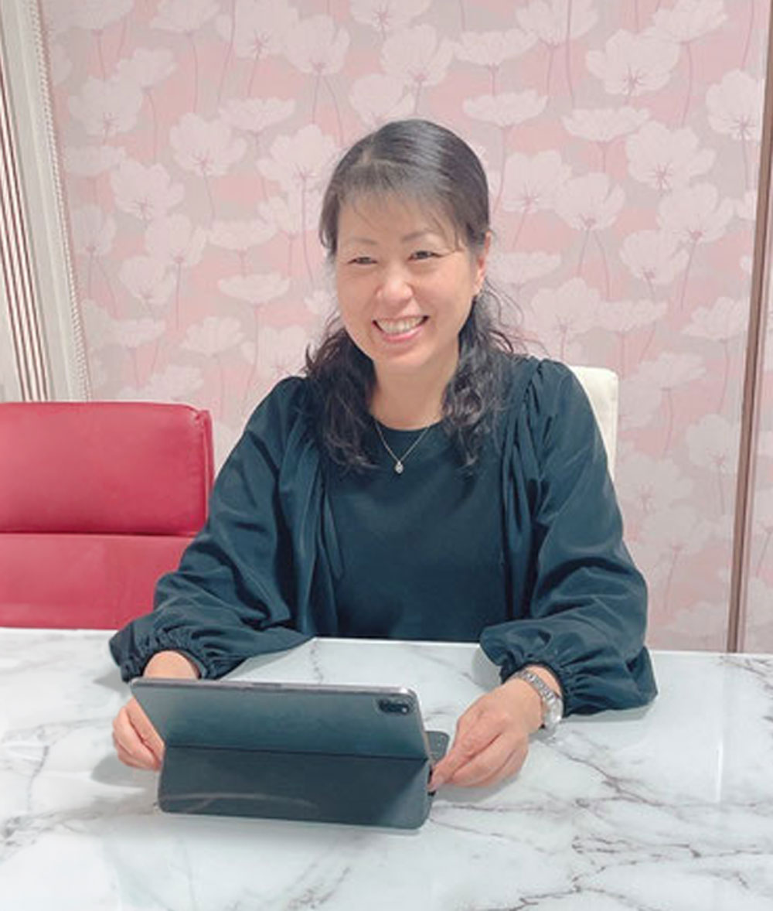
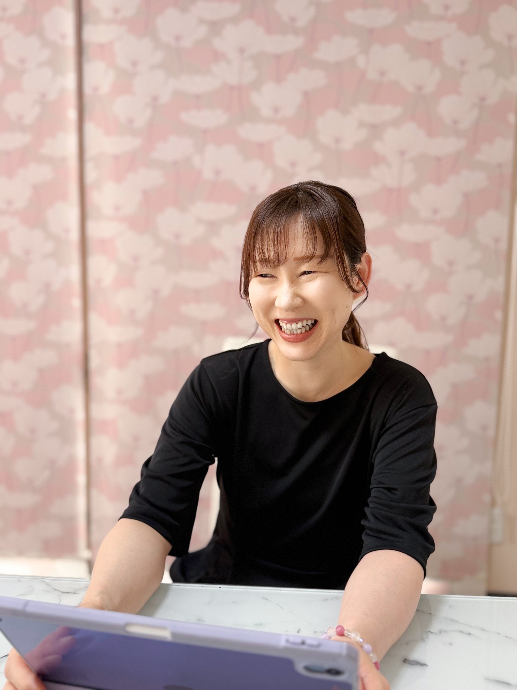
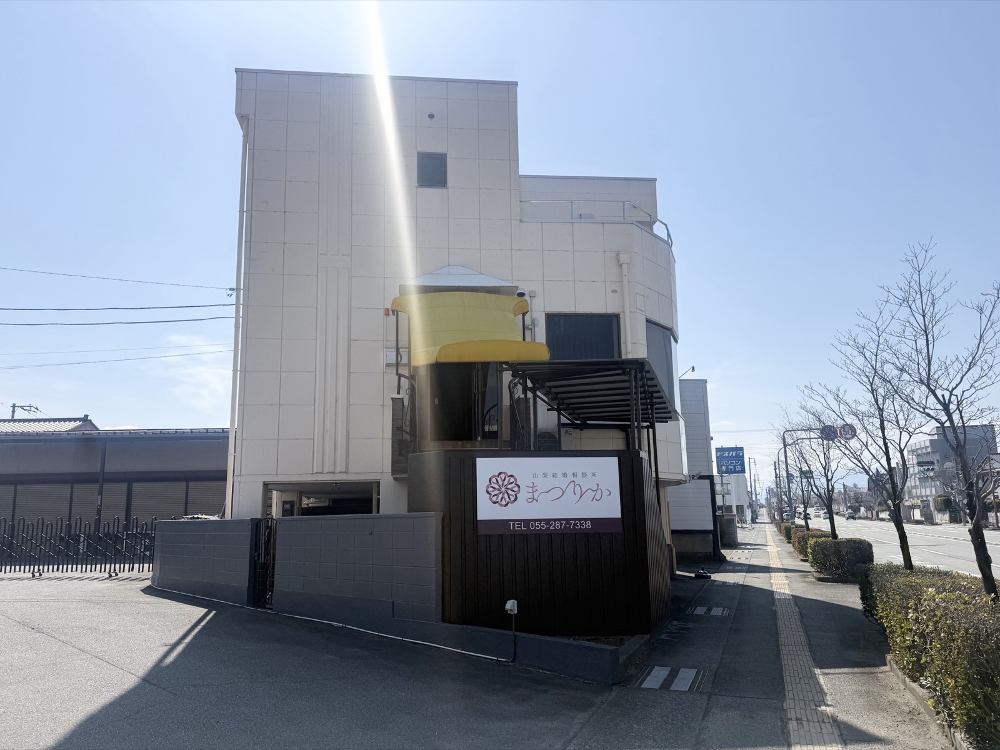
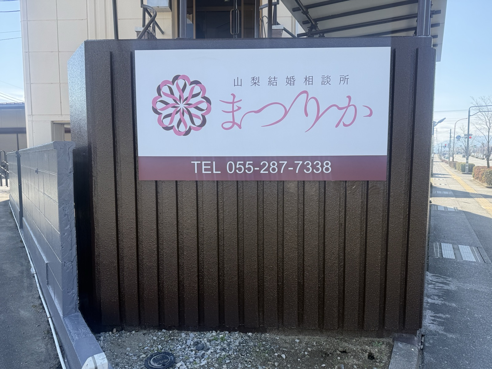

「やまなし縁結び応援ネットワーク」
協力事業者だから安心
結婚相談所連盟団体に加盟し、経済産業省の運営基準に基づく第三者認証の認定証を取得しています。

20代のための山梨婚活サポート
初めての婚活も、費用の不安も。婚活経験者のカウンセラーが
あなたの気持ちに寄り添い、最初の一歩から伴走します。
お見合い料0円
申込人数無制限
全国1,400社ネットワーク
20代で婚活を考えはじめたあなたへ
まつりかは、山梨・甲府を拠点に、20代の婚活をやさしくサポートします。地元での出会いに限らず、全国の会員様とつながりながら、あなたらしい結婚への一歩を一緒に整えていきます。
職場や日常だけでは出会いが広がらず、このままでいいのか不安になる。
やりとりが続かない、真剣度が分からないなど、ひとりで進める婚活に迷っている。
料金や活動内容が分からず、自分に合う方法なのか不安で踏み出せない。
OUR STRENGTHS
結婚相談所連盟団体に加盟し、経済産業省の運営基準に基づく第三者認証の認定証を取得しています。

資格を持つカウンセラーが、一人ひとりの気持ちに寄り添ってサポートします。
費用や申込数を気にせず、出会いのチャンスを最大限に広げられます。

全国の結婚相談所とつながり、あなたに合ったお相手との出会いを支援します。
スピーディーな成婚実績も。一人ひとりに合った活動で未来へ進みます。

MATCHMAKER

MATCHMAKER
HOW IT WORKS
まずは気軽にご相談ください。
お悩みや希望を丁寧に伺います。
ご希望条件に合う方をご紹介します。
成婚までしっかりサポートします。
PRICE
未来の幸せを、一緒に見つけよう！
始めやすさと続けやすさを大切に、20代の婚活を応援する料金プランをご用意しています。
入会時の費用
1万円割引得
100,000円
入会金・登録料100,000円は、
山梨県の補助金対象として申請できます。
実質0円
で始められる！※補助金の適用には条件があります。詳細はカウンセラーまでお問い合わせください。
選べる2つのコース
MEN'S COURSE
LADIES' COURSE
ご入会いただくと、嬉しい特典がたくさん！
無料！
初月は0円で始められます。
対面またはオンライン
無料！
プロのカウンセラーがしっかりサポート。
免除！
楽しいイベントに気軽に参加できます。
※補助金対象期間は2026年7月1日〜2027年2月28日(日)の間に入会された方です。
※山梨県内在住または在勤の20〜29歳の未婚者が対象です。
※補助金の対象は「入会金・登録料」です。
※補助金が予算額に達した場合は、期間内であっても申請受付が終了します。
FAQ
はい、もちろんです。男性のご相談も承っていますので、ひとりで悩まずお気軽にご相談ください。
はい、大丈夫です。婚活が初めての方にも丁寧に活動方法をご案内します。
はい。全国1,400社のネットワークを活用して、山梨県外の方とも出会えます。
はい。入会前の無料相談をご利用いただけます。無理な勧誘はありません。
INFORMATION
YAMANASHI MARRIAGE SUPPORT
山梨・甲府を拠点に、初めての方でも安心して相談できる婚活サポートを行っています。


FREE CONSULTATION
無理な勧誘は一切ありません。あなたのお悩みを整理するところから、一緒に始めましょう。